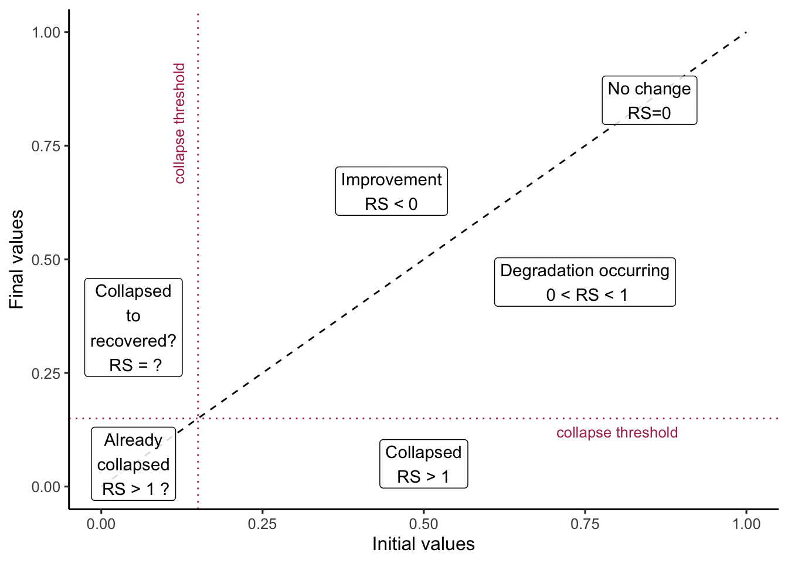
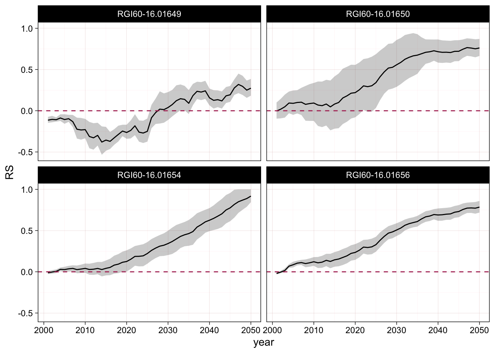

6 The RS formula
6.1 Original RS formula
The original Relative Severity formula is given by:
\[ \mathrm{RS} = \frac{\mathrm{OD}}{\mathrm{MD}} = \frac{V_{0} - V_{F}}{V_{0} - V_{C}} \] Where \(V_{0}\) is the initial value of the indicator, \(V_{F}\) is the final value, and \(V_{C}\) is the collapse threshold.
Visualisation of initial and final values
We can use a simple plot of initial (\(V_{0}\)) vs. final values (\(V_{F}\)) to visualise the different situations that arise when measure change in time in terms of the values of RS (Figure 6.1). For risk assessment we are mostly interested in what happens in the lower right half of the plot, i.e. degradation and collapse during the period of observation. Fringe results (small improvements or initial values below the collapse threshold) should not influence the main outcomes of the assessment. However in practice, the application of the original RS formula can produce very unexpected and uninformative results, especially in the left side of the plot, where the initial values are below the collapse threshold.
Problems
There are several inconveniences with this formulation:
- if \(V_{F}>V_{0}\) the value of \(\mathrm{OD}\) is negative and \(\mathrm{RS}\) is negative, but the magnitude can change dramatically with different values of \(\mathrm{MD}\),
- if \(V_{C}>V_{0}\) the value of \(\mathrm{MD}\) is negative and \(\mathrm{RS}\) is also negative,
- if both \(V_{C}>V_{0}\) and \(V_{F}>V_{0}\) the value of \(\mathrm{OD}\) and \(\mathrm{MD}\) are negative and \(\mathrm{RS}\) is positive,
- if \(|\mathrm{OD}| > |\mathrm{MD}|\) the value of \(\mathrm{RS}\) increases disproportionatly.
This means that negative values of RS can have completely different meanings.
6.2 Conditional formula for RS
We propose to use a conditional formula to avoid artifacts:
\[ \mathrm{RS}_{cor}= \begin{cases} 0, & \text{if}\ V_{0} ≤ V_{F} \text{ and}\ V_{F} > V_{C}\\ \mathrm{OD}/\mathrm{MD}, & \text{otherwise} \\ 1, & \text{if}\ V_{F} ≤ V_{C} \\ \end{cases} \]
This formula focuses on measuring degradation, and we suggest the use of alternative measures or indices for other purposes. Although values of \(RS<0\) could be informative for indicating recovery or improvement, we argue that their magnitude would not be informative for decision making purposes and could be confusing.
6.3 Examples of application of the formulas
We illustrate the differences between both formulas with some examples.
Decline in bioclimatic suitability
We first explore the calculation of the RS formulas to the predictions of the bioclimatic suitability model.
Prediction of the bioclimatic suitability model are available for four consecutive periods of 30 years each. The current conditions are summarised as mean values of the bioclimatic variables for the period 1980 to 2010, and the future conditions are calculated as mean values for the periods of 2011-2040, 2041-2070 and 2071-2100. For the future periods we have a choice of several global circulation model, socio-economic scenarios.
We calculate RS using the predicted suitability for the current conditions as initial value (\(V_0\)), and data from subsequent periods as final values (\(V_F\)).
We explore different collapse thresholds (\(V_{C}\)) based on the confusion matrix of the predictions under current conditions and the observed or known distribution of glacier outlines. We denote this estimate of relative severity as \(RS_{bcs}^{CT=acc}\), when the collapse threshold is calculated as the maximum accuracy cut-off value of the confusion matrix, and \(RS_{bcs}^{CT=ess}\), when the collapse threshold is calculated with the cut-off value of equal sensitivity and specificity of the confusion matrix.
We also explored a third cut-off value (Positive predictive value, \(ppv\)), but this often resulted in high threshold values and extremely high RS values (Figure 9.3).
Ruwenzori
We focus initially in the case of the Tropical Glacier Ecosystems of the Ruwenzori mountains in Africa. This is a small region and we have calculated bioclimatic suitability for 11 raster cells overlaping with glacier outlines.
We show here the calculation using the suitability values for future climatic conditions based on one combination of global circulation model and scenario (mri-esm2-0, ssp126) for the period 2041-2070.
This example highlights several problems with the original formula when the value of \(MD\) and \(RS\) are negative, or when \(MD\) is very close to zero and how these problems are resolved using the conditional formula. We can visualise these data points in an interactive plot (Figure 6.2).
Kilimanjaro
We perform the same calculations for the Tropical Glacier Ecosystems of Kilimanjaro in Africa. This is also a small region and we have calculated bioclimatic suitability for 10 raster cells overlaping with glacier outlines.
We use the same combination of model, scenario and future period (mri-esm2-0, ssp126, 2041-2070) with the same criterion for threshold selection.
In this unit, the same criterion for threshold selection results in a much higher collapse threshold, but we also see examples of increases in the suitability index due to anomalies for this time period in the underlying climate data for this region (Figure 6.3).
Relative severity of decline in ice mass
The data from the Dynamic Ice Mass Balance model is provided for each glacier outline in one-year intervals, each assessment unit has multiple glacier outlines of different size and therefore different initial ice mass.
We calculate RS using the predicted median ice mass of the year 2000 as initial value, and data from subsequent years (2001 to 2100) as final values, and use a collapse threshold of \(0 kg\) of ice. We use the median absolute deviation to calculate a minimum and a maximum interval for the values of \(RS\).
We denote this estimate of relative severity as \(RS_{ice}^{CT=0}\).
Kilimanjaro
The Figure 6.4 shows the calculation of \(\mathrm{RS}_{ice}^{CT=0}\) using the original formula for a selection of glacier outlines (sites) in the assessment unit of Kilimanjaro.

Given that the collapse threshold is also the minimum value of ice possible, the original formula does not produce values higher than one, but some models predict an increases in ice mass at the start of the time series for some glacier outlines, and this will result in negative values (below the dashed line).